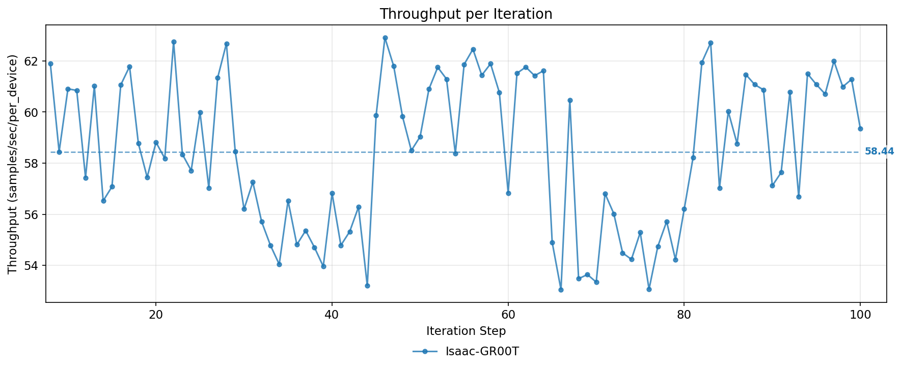
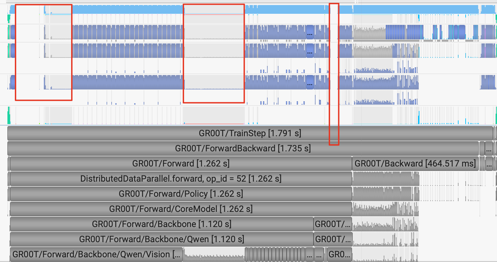
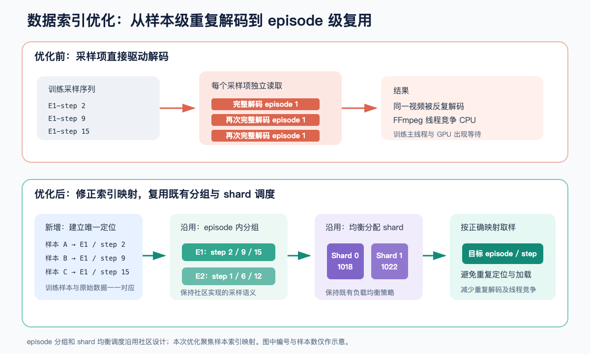
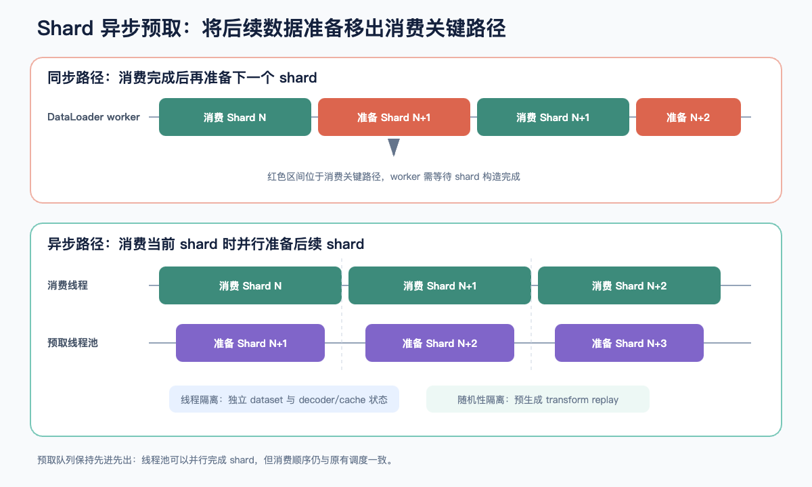
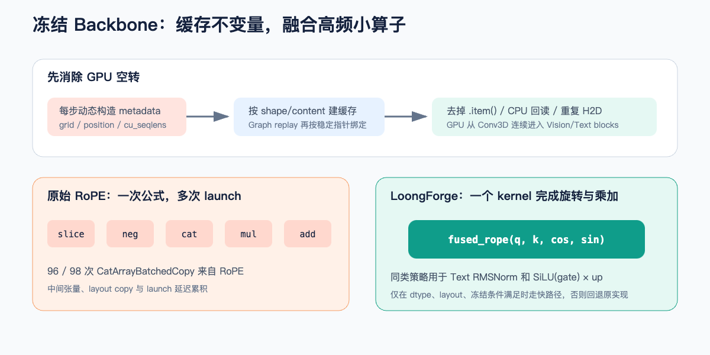
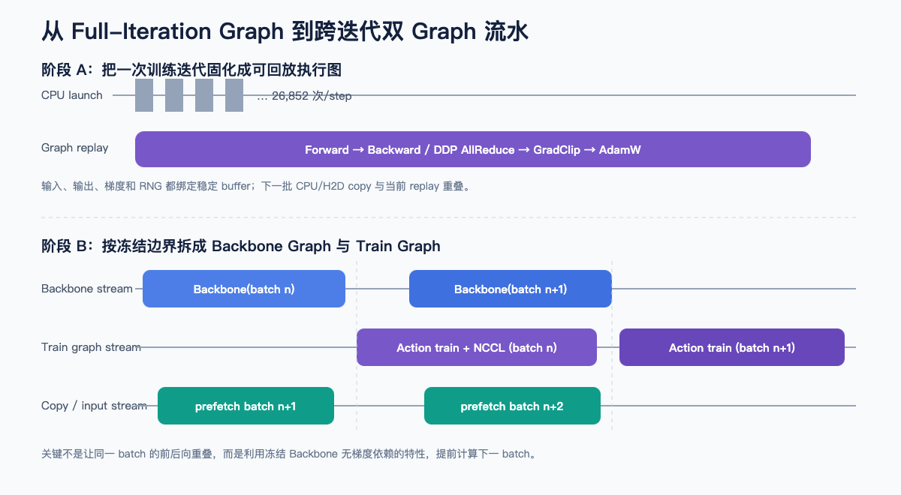
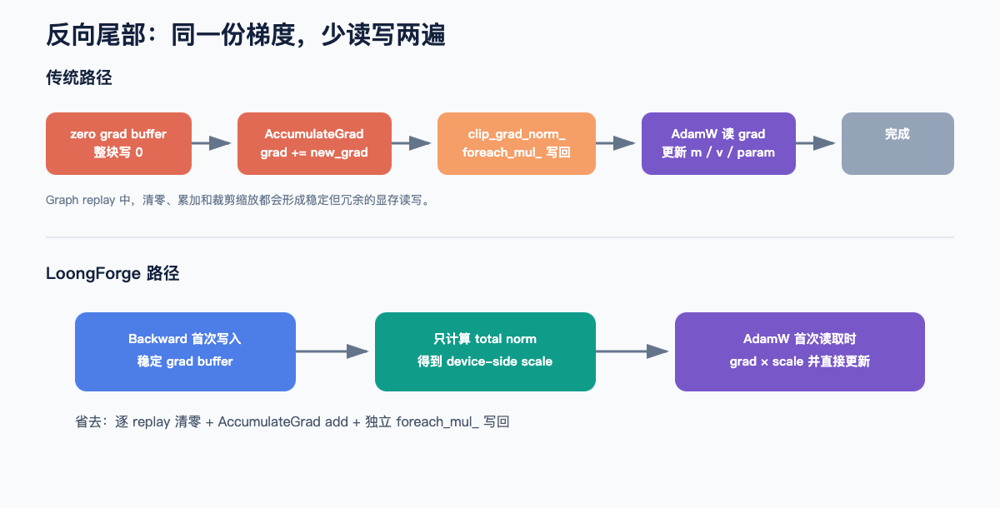
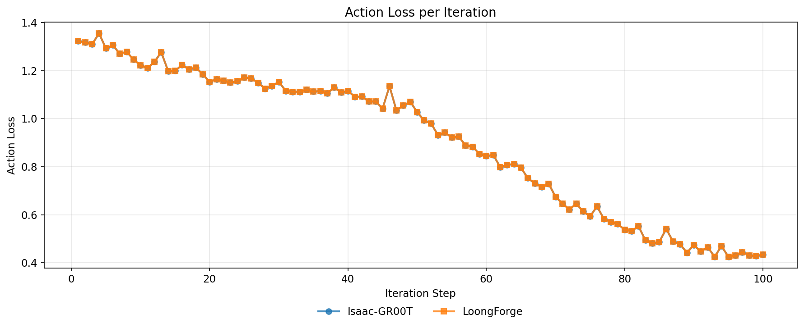
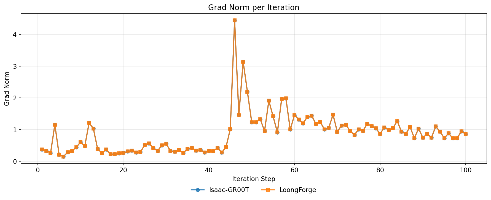

From Stop-and-Go Execution to a Continuous Pipeline: Optimizing GR00T-N1.7 Training
Introduction
Training large language models and vision-language models usually has a fairly clear optimization story: turn text into tokens, organize most of the compute into regular Transformer blocks, and then optimize around matrix multiplication, memory access, and collective communication. A VLA (Vision-Language-Action) model is not a simple sum of a language model and an action predictor. One training iteration has to handle multi-camera video, language instructions, robot state, and continuous actions, passing in turn through a vision encoder, a language model, and an action-generation network. To a GPU this is one compute graph; to the training backend it is a complex system spanning video decoding, dynamic multimodal sequences, heterogeneous model structures, and distributed updates.
GR00T-N1.7 has all of these traits: it has about 3.1B parameters, and training freezes the Backbone and updates only the Action Head. This reduces backward compute but also creates an asymmetric workload: the Backbone carries the multimodal forward pass, the Action Head handles forward, backward, and parameter updates, and data processing and cross-GPU communication are spread across different phases of an iteration.
With a composite workload like this, no single optimization is enough. The first job is therefore to characterize how one GR00T-N1.7 iteration spends its time under the current training configuration and to identify the key bottlenecks. This post groups the optimizations into three levels and discusses how each arises and how it is implemented:
- Data supply: fix duplicate video decoding, and use asynchronous shard prefetch so data processing keeps up with GPU compute;
- Model compute: remove dynamic metadata, redundant outputs, and high-frequency small-kernel overhead from the frozen Backbone;
- Training execution and distributed: reduce execution fragmentation with CUDA Graph, a cross-iteration pipeline, and fewer gradient memory passes.
These three lines correspond to data, compute, and execution, and together raise training throughput to 1.79x that of the original implementation.
1. Locating the bottleneck: time goes to the frozen Backbone and fragmented execution
GR00T-N1.7 is a typical Vision-Language-Action architecture. Input images and text first pass through a Qwen3-VL Backbone to produce vision-language features, and an Action Head then predicts robot actions using flow matching and a 32-layer DiT. The official community training configuration freezes the Backbone and trains only the Action Head. Under the same training configuration, we measured the NVIDIA Isaac-GR00T community DDP implementation and saw abnormal throughput jitter (Figure 1).

The cause is that the Isaac data layer has no deduplication for the same episode. When one episode is split into 10 splits scattered across different shards, and there is no dedup cache, that episode can be fully decoded up to 10 times, spawning a large number of native FFmpeg threads. When many workers across many ranks consume at the same pace, they trigger decoding at the same time, and dozens of decoder threads fight the main training thread for CPU time. The main thread, which issues GPU kernel launches, is delayed by scheduling; the GPU does not receive its next instructions in time, and the result is throughput that swings up and down.
We broke down a single step with Nsight Systems and extracted the time share of the whole iteration:
Table 1: Time and share of each phase in one TrainStep
| Phase | Time per step (ms) | E2E share | Notes |
|---|---|---|---|
| TrainStep | 1791 | - | |
| Forward + Backward | 1735 | 96.9% | |
| batch fetch | 8.25 | 0.46% | Data processing time |
| Forward | 1262.23 | 70.5% | The frozen Backbone takes the largest share |
| Qwen Vision | 638.90 | 35.67% | |
| Qwen Text | 258.23 | 14.42% | |
| Action Head | 142.61 | 7.96% | |
| Backward | 464.52 | 26% | |
| GradClip | 18.500 | 1.0% | |
| Optimizer Step | 31.285 | 1.74% | Dominated by 43 FP32 AllReduce calls |
| others | 6.215 | 0.35% |
Table 1 shows that most of an iteration is spent in Forward + Backward. A closer look with the Profiler shows GPU idle gaps inside the Forward phase (Figure 2), accompanied by small kernels such as RoPE, pointwise ops, and layout/cat. Also, the Backbone's default forward still computes the large lm_head matmul every step, yet only the VLM features are needed here and the lm_head result is never used downstream, so that step is redundant.

At the kernel level, each GPU launches about 26,852 kernels per step, and about 21,005 of them (78.22% of all calls) average under 20 μs. The bottleneck is therefore not a single GEMM, but the continuous launch of a large number of fragmented kernels, plus host-side synchronization that repeatedly interrupts the GPU execution queue.
2. Data supply: eliminate duplicate decoding and add asynchronous prefetch
2.1 The duplicate episode decoding behind DataLoader jitter
Robot data stores its metadata per episode: an episode contains continuous video, state, and actions, while the unit of training sampling is a single step inside it. After analyzing the community implementation, we found that its shard index and the underlying dataset index have no stable mapping between them, so different samples can repeatedly hit and fully decode the same episode. Every video decode launches FFmpeg-related threads; when several DataLoader workers decode duplicates concurrently, the many decoder threads occupy CPU scheduling resources, the main training thread cannot issue kernels to the GPU in time, idle gaps appear on the GPU timeline, and step time fluctuates noticeably.
As Figure 3 shows, the fix is not to add more workers, but to rebuild the index relationship between training samples and their original episodes. Concretely, we first traverse all episodes and, based on the action horizon, filter out trailing steps that cannot form a complete action sequence, building a unique locator for every valid training sample. We then keep the community's existing episode grouping and shard load-balancing strategy, and when a worker consumes a shard it uses the locator to read the correct sample position. This does not change the sampling semantics or data distribution, and it avoids repeated lookups, repeated decoding of the same episode, and repeated construction of local indexes.

2.2 Hiding shard preparation with asynchronous prefetch
Fixing the index avoids pointless duplicate decoding, but preparing a shard still takes time. So we build upcoming shards asynchronously with a bounded thread pool: while the DataLoader consumes the current shard, the prefetch queue prepares the following shards in parallel; after a shard is consumed, the already-built result is taken from the head of the queue and a new task is added. Two design points matter for correctness and stability:
- Each prefetch thread holds its own shallow-copied dataset and resets the episode cache and decoder state. Otherwise several threads would share a video decoder, which easily corrupts cache consistency under concurrent reads.
- Random transforms such as image augmentation must not draw random numbers independently in concurrent threads. Otherwise a change in thread completion order shifts the augmentation sequence under the same seed and breaks accuracy alignment.
So we first generate the transform replay parameters in training consumption order, and then hand the determined replay to the prefetch threads (Figure 4). The asynchronous mechanism then changes only execution timing, not random semantics.

3. Model compute: cut redundant overhead in the frozen Backbone
Instrumenting the Profiler for a complete GR00T-N1.7 training step showed two significant idle gaps on the GPU timeline: one between Vision Conv3D and the first Vision Block, and another between writing the visual tokens and the first Text Block (Figure 2). Neither is caused by large matrix computation; both come from metadata construction on the CPU side.

3.1 Turning per-step dynamic metadata into invariants reused by signature
Qwen3-VL dynamically generates several kinds of auxiliary information from image_grid_thw, including:
- the index and weight for position interpolation;
- the position ids and frequency-table indices for Vision RoPE;
cu_seqlensandmax_seqlenused by FlashAttention;- the positions of image tokens within the text sequence;
- the multimodal position ids, rope delta, and token type.
A general-purpose implementation must support arbitrary image sizes and sequence shapes, so by default it recomputes all of this every step. In GR00T-N1.7 training, however, the image preprocessing size, spatial merge rule, and batch layout are highly stable, so rebuilding metadata for the same grid signature is redundant. In addition, .item(), .tolist(), boolean reductions, and H2D copies in that construction trigger host-device synchronization and make the main GPU compute path wait.
To address this we designed a two-level metadata cache (Figure 5):
- While the batch is still on the CPU, generate position metadata from the input content and shape, avoiding scalar readbacks after the data has moved to the GPU;
- During CUDA Graph preparation, build Vision metadata keyed by
grid_signature = ((T, H, W), ...), and bind it by the stabledata_ptr()of static tensors at replay time.
Caching by content avoids recomputing identical inputs, and binding by pointer avoids dynamic Python lookups during Graph replay. When the grid, token count, or attention mask shape changes, the system validates the Graph contract, and a batch that cannot be safely reused does not inherit existing metadata.
3.2 Skipping the 151,936-dim vocabulary projection that action loss never uses
lm_head maps Backbone output to language vocabulary logits, but GR00T-N1.7 training uses only the hidden states to compute the action loss and never consumes language logits. The 2048 → 151936 vocabulary projection in the default forward is therefore redundant for this model. We return the Backbone hidden states directly and skip lm_head in GR00T-N1.7 training; other tasks that need language logits keep the original forward behavior.
3.3 Fusing RoPE and pointwise ops to cut kernel launches and intermediate tensors
In the Profiler, vectorized_elementwise_kernel is called 16,260 times per step, and 80 of the 98 CatArrayBatchedCopy calls come from rotate_half() in Vision/Text RoPE. A typical PyTorch implementation looks like this:
def rotate_half(x):
x1 = x[..., : x.shape[-1] // 2]
x2 = x[..., x.shape[-1] // 2 :]
return torch.cat((-x2, x1), dim=-1)
q = q * cos + rotate_half(q) * sin
k = k * cos + rotate_half(k) * sinMathematically this is only a rotation plus multiply-add, but at execution time it expands into slice, neg, cat, mul, and add kernels, producing intermediate tensors and layout copies. The cost in any one block is limited, but repeated across 24 Vision Blocks and 16 Text Blocks, the accumulated cost is not negligible. For this high-frequency pattern we implemented separate fused CUDA kernels for Vision RoPE and Text RoPE: one kernel reads q/k/cos/sin, completes the half rotation and multiply-add, and writes the result. We then also fused two pointwise patterns in the frozen Text Backbone (Figure 5):
- RMSNorm keeps its original FP32 reduction semantics and finishes normalization and weight scaling in the same kernel;
- the
SiLU(gate) * upin the MLP is merged, saving an intermediate activation tensor and one elementwise pass.
The fused kernels do not replace every call unconditionally. The fused path is used only when the input is a CUDA tensor, rank/shape and the cos/sin dtype satisfy the constraints, and no input requires gradients; Text Norm and MLP additionally check contiguity, dtype, device, and frozen status. If any condition fails, execution falls back to the original Transformers implementation.
4. Training execution: restructure iteration scheduling and distributed communication
Operator fusion reduces the number of execution nodes, but every step still carries a lot of Python, dispatcher, and CUDA launch overhead. Squeezing individual short kernels further has diminishing returns (Figure 6), so we need to change how the iteration executes as a whole.

4.1 Choosing a Full-Iteration CUDA Graph
When evaluating CUDA Graph, we did not limit the capture scope to a single module or a microbatch forward. For GR00T-N1.7, partial capture still splits the training loop into several phases: beyond the forward Graph there are backward, DDP bucket AllReduce, gradient clipping, the optimizer step, input copies, and random-number preparation. The CPU still has to schedule across those boundaries, and small kernels across phases cannot be fully frozen, so we capture the complete training iteration:
Forward
→ action loss
→ Backward + DDP AllReduce
→ grad norm / clip
→ AdamW stepBefore capture, we run an eager warmup to materialize optimizer state and stable grad buffers; we then allocate address-stable tensors for inputs, outputs, learning rate, random numbers, and Graph results. During Graph replay no new training objects are created: we only copy the next batch into the static buffers and replay the captured CUDA work.
The key to this approach is not calling torch.cuda.graph(), but turning an execution path that depends on Python and dynamic shapes into a stable Graph contract:
- FlashAttention mask handling cannot run
attention_mask.all()ormax().item()during capture, so unpadding metadata is cached ahead of time; - image grid, token count, attention mask, and sequence length must be validated before replay;
- flow-matching timesteps sampled on the CPU are moved through a pinned host buffer and a dedicated stream, preserving the original random-number consumption order;
- the CUDA generator state is registered with the Graph to keep replay semantics for dropout and action noise;
- DDP AllReduce stays inside the Graph, avoiding repeated synchronization outside capture.
4.2 Using the frozen boundary for a cross-iteration Backbone forward
The Full Graph reduces launch fragmentation, but NCCL communication at the tail of backward still cannot be fully hidden. The frozen structure of GR00T-N1.7 offers a further opening: the Backbone forward of batch n+1 does not depend on the optimizer update of batch n.
So we further split the full execution graph into two Graphs:
- Backbone Graph: runs only the frozen Qwen3-VL forward and writes the result into a separate staging buffer;
- Train Graph: reads the stable Backbone output and runs the Action Head forward, backward, DDP communication, gradient handling, and the optimizer.
In steady state, while the Train Graph is processing batch n, a dedicated Backbone stream has already started on batch n+1. Once the Backbone output is ready, a producer-consumer dependency is established through an event, and the output is copied into the Train Graph's static input. Meanwhile, the copy stream keeps prefetching batch n+2.
This does not run the forward and backward of the same batch in parallel, because they have a real data dependency. What it exploits is the dependency-free window between different batches, and the frozen boundary guarantees that parameters cannot go out of version between the two pipelines. Before running, we also check that requires_grad=False holds for every Backbone parameter; once the Backbone participates in training, this pipeline assumption no longer holds. The scheme not only computes part of the next batch's forward early, it also uses that compute to cover part of the exposed NCCL communication of the current batch.
4.3 Covering exposed communication and reducing repeated gradient memory access
After the cross-iteration Backbone pipeline covers part of the communication, the next focus is the memory reads and writes after backward. On the traditional path, the same gradient goes through at least three kinds of extra operations:
- before each replay, the leaf grad buffer is zeroed;
- Autograd's AccumulateGrad performs one more
grad += new_grad; clip_grad_norm_uses a separate_foreach_mul_to write the clipping coefficient back to every gradient, and AdamW then reads it all again.
For a Full Graph with stable addresses and only one microbatch per step, these memory operations can be merged. Before capture, we materialize stable grad buffers for all trainable parameters; during capture/replay, backward writes the current gradients directly, avoiding "write 0, then add". Gradient clipping now computes only the global norm and a device-side scale, and no longer writes scaled gradients back separately. As Figure 7 shows, our capturable AdamW applies grad × scale the first time it reads the gradient and directly updates the first moment, second moment, and parameters.

5. Performance gains and training-correctness validation
Table 2 shows the results. Each stage includes the optimizations enabled before it, and cumulative gains are measured against the late-phase training result of the Isaac community DDP implementation as the baseline.
Table 2: Ablation of performance gains
| Configuration | MBS | Throughput (samples/s/device) | Cumulative gain vs. baseline | Speedup |
|---|---|---|---|---|
| Isaac-GR00T N1.7 (baseline) | 112 | 58.44 | / | / |
| LoongForge-GR00T N1.7 + data supply optimization | same | 64.64 | +10.6% | 1.10× |
| LoongForge-GR00T N1.7 + model compute optimization | same | 85.10 | +45.6% | 1.45× |
| LoongForge-GR00T N1.7 + training execution optimization | same | 104.64 | +79.0% | 1.79× |
To validate end-to-end correctness, every stage fixes the model weights, data, seed, batch, learning-rate schedule, and distributed configuration, and, as Figure 8 shows, compares action loss and grad norm step by step. The loss MAE/max of the optimized runs are both 0/0, showing that data prefetch, operator fusion, Graph replay, and communication scheduling do not change training semantics.


Summary
This round of optimization does not target any single operator. Instead it reworks the critical path across data supply, model compute, and training execution, so that a previously stop-and-go execution becomes a continuous pipeline. In the end, GR00T-N1.7 training throughput rises from 58.44 samples/s/device to 104.64 samples/s/device, a 1.79x speedup over the community implementation.